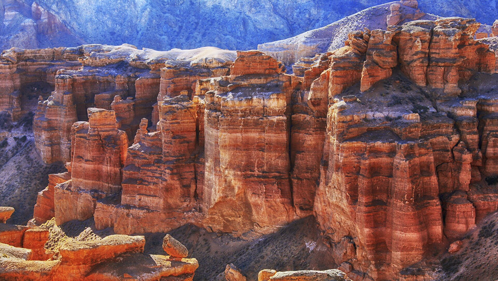

Unforgettable landscapes and the breathtaking Valley of Castles.
About Charyn Canyon
Located about 200 km east of Almaty, Charyn Canyon stretches over 150 km
along the Charyn River. Its most famous section, the “Valley of Castles,”
is filled with rock formations shaped by wind and water for millions of years.
Often compared to the Grand Canyon in the USA, Charyn has its own unique charm
and cultural legends.

Itinerary
(1-Day Trip)
- Morning: Departure from Almaty (3.5–4 hours by bus).
- Arrival: Walking tour of the Valley of Castles.
- Lunch: Picnic by the Charyn River.
- Afternoon: Explore trails, relax, and take photos.
- Evening: Return to Almaty.
Optional: 2-day program with overnight stay in eco-camp or guesthouse.